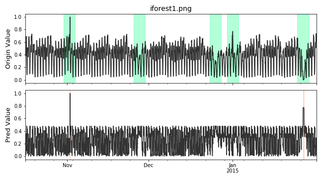
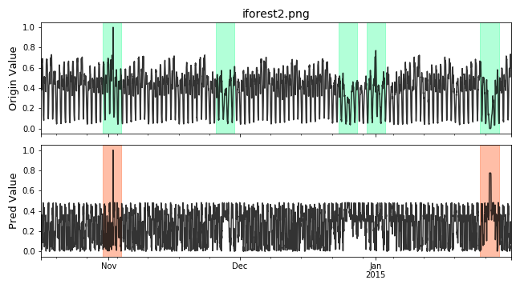
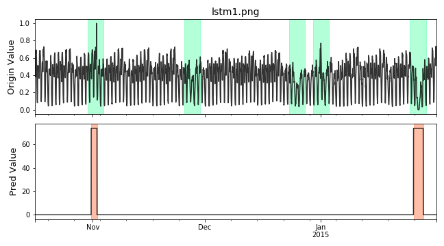
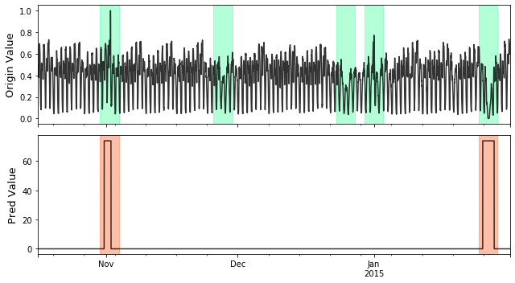
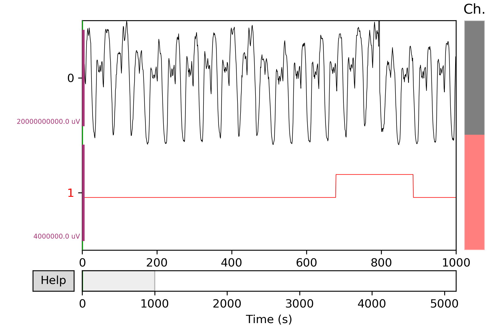
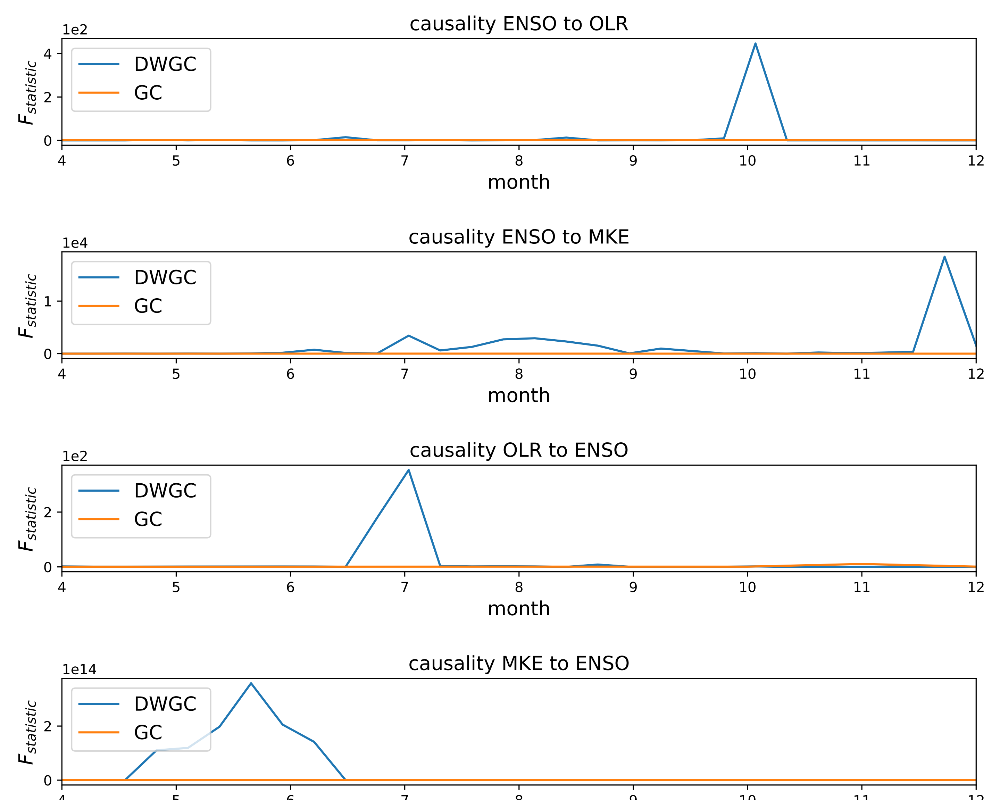
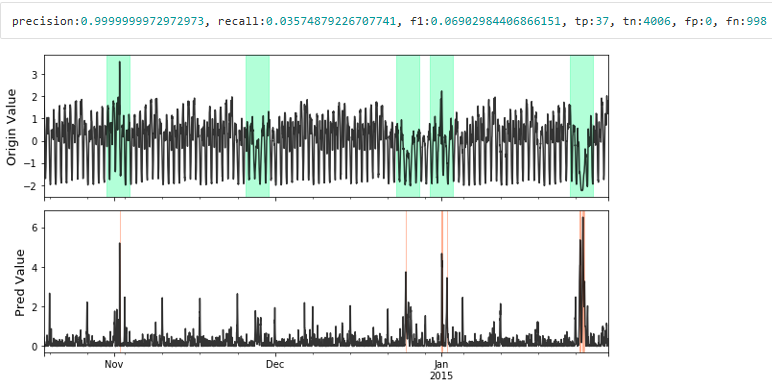
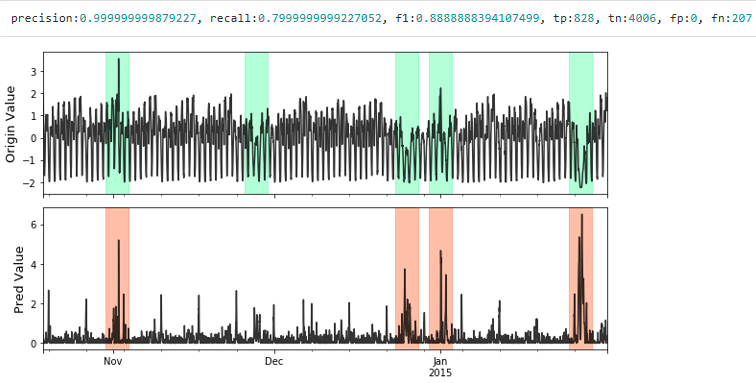

Examples¶
IsolationForest Example¶
Full example: notebooks/lumino_rrcf.ipynb
Import models
import numpy as np from realseries.models.iforest import IForest # IsolationForest detector from realseries.utils.evaluation import point_metrics, adjust_predicts from realseries.utils.data import load_NAB from realseries.utils.visualize import plot_anom
Generate sample data with
realseries.utils.data.load_NAB():dirname = 'realKnownCause' filename = 'nyc_taxi.csv' # the fraction of used for test fraction=0.5 train_set, test_set = load_NAB(dirname, filename, fraction=fraction) # the last column is label; other columns are values train_data,train_label = train_set.iloc[:, :-1],train_set.iloc[:, -1] test_data,test_label = test_set.iloc[:, :-1],test_set.iloc[:, -1] # visualize test_data.plot()
Initialize a
realseries.models.iforest.IForestdetector, fit the model, and make the prediction.# train the isolation forest model # number of trees n_estimators=1000 # number of samples from the input array X for one estimator max_samples="auto" # the fraction of anomaly point in the total input sequence contamination=0.01 #random seed random_state=0 #build model IF = IForest(n_estimators=n_estimators, max_samples=max_samples, contamination=contamination, random_state=random_state) #train model IF.fit(train_data) # detect score = IF.detect(test_data)
Get anomaly label by setting threshold.
thres_percent=99.9 thres = np.percentile(score,thres_percent) pred_label = (score>thres)
Visualize and Evaluate the prediction result point to point.
# visualize plot_anom( test_set, pred_label, score) # evaluate and print the results precision, recall, f1, tp, tn, fp, fn = point_metrics(pred_label, test_label) print('precision:{}, recall:{}, f1:{}, tp:{}, tn:{}, fp:{}, fn:{}'.format( precision, recall, f1, tp, tn, fp, fn))

Visualize the prediction that is adjusted. Evaluate the adjusted results.
# evaluate and print the results delay = 200 # delay is the max number of delay points that allowed # when anomaly point occur. adjust_pred_label = adjust_predicts(pred_label,test_label,delay=200) plot_anom( test_set, adjust_pred_label, score) precision, recall, f1, tp, tn, fp, fn = point_metrics(adjust_pred_label, test_label) print('precision:{}, recall:{}, f1:{}, tp:{}, tn:{}, fp:{}, fn:{}'.format( precision, recall, f1, tp, tn, fp, fn))

Pytorch basded Neural Network Example¶
Full example: notebooks/lstm_dym.ipynb
Import models
import os import numpy as np from pathlib import Path from realseries.models.lstm_dynamic import LSTM_dynamic from realseries.utils.evaluation import point_metrics, adjust_predicts from realseries.utils.data import load_NAB from realseries.utils.visualize import plot_anom os.environ["CUDA_VISIBLE_DEVICES"] = '0' # set visible gpu
Generate sample data with
realseries.utils.data.load_NAB():dirname = 'realKnownCause' filename = 'nyc_taxi.csv' # the fraction of used for test fraction=0.5 train_set, test_set = load_NAB(dirname, filename, fraction=fraction) # the last column is label; other columns are values train_data,train_label = train_set.iloc[:, :-1],train_set.iloc[:, -1] test_data,test_label = test_set.iloc[:, :-1],test_set.iloc[:, -1] # visualize test_data.plot() from realseries.utils.preprocess import normalization train_data,test_data = normalization(train_data),normalization(test_data)
Initialize parameters.
# LSTM parameters # -------------------------- dropout = 0.3 lstm_batch_size = 64 hidden_size = 128 num_layers = 2 lr = 1e-3 epochs = 40 # data parameters # -------------------------- # time_window length of input data l_s = 50 # number of values to predict by input data n_predictions = 5 # error parameters # -------------------------- # number of values to evaluate in each batch in the prediction stage batch_size = 100 # window_size to use in error calculation window_size = 30 # determines window size used in EWMA smoothing (percentage of total values for channel) smoothing_perc = 0.05 # number of values surrounding an error that are brought into the sequence (promotes grouping on nearby sequences error_buffer = 20 # minimum percent decrease between max errors in anomalous sequences (used for pruning) p = 0.13
Initialize a
realseries.models.lstm_dynamic.LSTM_dynamicdetector, fit the model, and make the prediction.# build the model # -------------------------- # path to save model in Realseries/snapshot/..... model_path = Path('',f'../snapshot/lstm_dym/{filename[:-4]}') # init the model class lstm_dym = LSTM_dynamic( batch_size=batch_size, window_size=window_size, smoothing_perc=smoothing_perc, error_buffer=error_buffer, dropout=dropout, lstm_batch_size=lstm_batch_size, epochs=epochs, num_layers=num_layers, l_s=l_s, n_predictions=n_predictions, p=p, model_path=model_path, hidden_size=hidden_size, lr=lr) lstm_dym.fit(train_data) # detect anomaly_list, score_list = lstm_dym.detect(test_data) # create anomaly score array for ploting and evaluation pred_label = np.zeros(len(test_label)) score = np.zeros(len(test_label)) for (l, r), score_ in zip(anomaly_list, score_list): pred_label[l:r] = 1 score[l:r] = score_
Visualize and Evaluate the prediction result point to point.
# visualize plot_anom( test_set, pred_label, score) # evaluate and print the results precision, recall, f1, tp, tn, fp, fn = point_metrics(pred_label, test_label) print('precision:{}, recall:{}, f1:{}, tp:{}, tn:{}, fp:{}, fn:{}'.format( precision, recall, f1, tp, tn, fp, fn))

Visualize the prediction that is adjusted. Evaluate the adjusted results.
# evaluate and print the results delay = 200 # delay is the max number of delay points that allowed # when anomaly point occur. adjust_pred_label = adjust_predicts(pred_label,test_label,delay=200) plot_anom( test_set, adjust_pred_label, score) precision, recall, f1, tp, tn, fp, fn = point_metrics(adjust_pred_label, test_label) print('precision:{}, recall:{}, f1:{}, tp:{}, tn:{}, fp:{}, fn:{}'.format( precision, recall, f1, tp, tn, fp, fn))

Series and Label Visualize Example¶
Import models
import numpy as np from realseries.utils.data import load_NAB from realseries.utils.visualize import plot_anom,plot_mne
Generate sample data with
realseries.utils.data.load_NAB():dirname = 'realKnownCause' filename = 'nyc_taxi.csv' # the fraction of used for test fraction=0.5 train_set, test_set = load_NAB(dirname, filename, fraction=fraction) # the last column is label; other columns are values train_data,train_label = train_set.iloc[:, :-1],train_set.iloc[:, -1] test_data,test_label = test_set.iloc[:, :-1],test_set.iloc[:, -1]
Mne based visualize. The dataset
test_setcontains signals channel and label channel. The label is in the last channel. In order to make data and label channel shown in different colors, we set two kinds channle type bych_types=['eeg']*(num_chans-1) + ['ecg'].The last channelecgis different with otherseeg. We also assign different colors aseeg='k', ecg='r'. e.g.# the last column of test_set is label num_chans = test_set.shape[1] # modify scales according the shown figure, it can also # be set to scalings='auto' scalings = {'eeg': 1e4, 'ecg': 2} # assign colors for different channel types. color=dict(eeg='k', ecg='r') # the last channle is ecg and others are eeg channle ch_types=['eeg']*(num_chans-1) + ['ecg'] plot_mne(test_set, scalings=scalings, ch_types=ch_types, color=color)

More details in
realseries.utils.visualize.plot_mne().
Granger causality Example¶
Full example: notebooks/DWGC.ipynb, notebooks/GC.ipynb
Industrial demo¶
Import models
import sys,os import realseries import matplotlib as plt import numpy as np realseries.__file__ from realseries.models.base import BaseModel from realseries.models.NAR import NAR_Network from realseries.models.AR_new import AR_new from realseries.models.DWGC import DWGC from realseries.models.GC import GC from matplotlib import pyplot as plt from statsmodels.tsa.ar_model import AR from sklearn.metrics import mean_squared_error import pandas as pd import scipy.special import matplotlib.pyplot as plt import numpy as np from datetime import datetime import matplotlib.dates as mdates from scipy import stats import matplotlib.pyplot as plt import numpy as np import seaborn as sns import pandas as pd import math import numpy as np
Import data and DWGC algorithm, the F_test result shows the window level causality.
model = NAR_Network(20,10,1,0.9) tempt1 = DWGC(1,model,0.8,'NAR',2,1) tempt2 = GC(1,model,'NAR',1) data = pd.read_csv("ensodata.csv",encoding = "ISO-8859-1", engine='python') data = data.values
Visualize the window-level causality. We find that DWGC method is more consistent with two prior conclusions than traditional GC method: 1. The causal relationship of ENSO to MKE/OLR is more obvious in autumn/winter than in spring/summer; 2 the causal relationship of MKE/OLR to ENSO exists in spring/summer.
fig = plt.figure() fig = plt.figure(figsize=(10,8)) ax1 = fig.add_subplot(411) tempt1.fit([data[0:50,0],data[0:50,2]]) F_test_win1 = tempt1.detect([data[0:50,0],data[0:50,2]]) F_test_win2 = tempt2.detect([data[0:50,0],data[0:50,2]]) x = np.linspace(4, 12,30) l1,=ax1.plot(x,F_test_win1) l2,=plt.plot((F_test_win2)) plt.xlim(4,12) ax1.legend(handles=[l1,l2], labels=[r'DWGC ',r'GC'], loc='upper left', fontsize=14) plt.title('causality ENSO to OLR',fontsize = 14) plt.xlabel('month',fontsize = 14) plt.ylabel(r'$F_{statistic}$',fontsize = 14) ax1.yaxis.get_major_formatter().set_powerlimits((0,1)) ax2 = fig.add_subplot(412) F_test_win1 = tempt1.detect([data[0:50,1],data[0:50,2]]) F_test_win2 = tempt2.detect([data[0:50,1],data[0:50,2]]) l1,=plt.plot(x,F_test_win1) l2,=plt.plot(F_test_win2) plt.xlim(4,12) plt.legend(handles=[l1,l2], labels=[r'DWGC ',r'GC'], loc='upper left', fontsize=14) plt.xlabel('month',fontsize = 14) plt.ylabel(r'$F_{statistic}$',fontsize = 14) ax2.yaxis.get_major_formatter().set_powerlimits((0,1)) plt.title('causality ENSO to MKE',fontsize = 14) ax3 = fig.add_subplot(413) F_test_win1 = tempt1.detect([data[0:50,2],data[0:50,0]]) F_test_win2 = tempt2.detect([data[0:50,2],data[0:50,0]]) l1,=plt.plot(x,F_test_win1) l2,=plt.plot(F_test_win2) plt.xlim(4,12) plt.legend(handles=[l1,l2], labels=[r'DWGC ',r'GC'], loc='upper left', fontsize=14) plt.xlabel('month', fontsize=14) plt.ylabel(r'$F_{statistic}$', fontsize=14) ax3.yaxis.get_major_formatter().set_powerlimits((0,1)) plt.title('causality OLR to ENSO', fontsize=14) fig.tight_layout() plt.subplots_adjust(wspace =1, hspace =1) ax4 = fig.add_subplot(414) F_test_win1 = tempt1.detect([data[0:50,2],data[0:50,1]]) F_test_win2 = tempt2.detect([data[0:50,2],data[0:50,1]]) plt.xlim(4,12) l1,=plt.plot(x,F_test_win1) l2,=plt.plot(F_test_win2) plt.legend(handles=[l1,l2], labels=[r'DWGC ',r'GC'], loc='upper left', fontsize=14) plt.xlabel('month', fontsize=14) plt.ylabel(r'$F_{statistic}$', fontsize=14) ax4.yaxis.get_major_formatter().set_powerlimits((0,1)) plt.title('causality MKE to ENSO', fontsize=14) # Compared with the traditional GC method, DWGC method can better fit two prior conclusions: # 1 The causality from ENSO to MKE/OLR is more obvious in autumn/winter than in spring/summer; # 2 The causality from MKE/OLR to ENSO exists in spring/suummer. plt.savefig('DWGC(GC)_ENSO.pdf')

Simulation demo¶
Preprocessing, import the data and models.
import sys,os import realseries import matplotlib as plt import numpy as np realseries.__file__ from realseries.models import iforest from realseries.models.base import BaseModel import matplotlib.pyplot as plt import numpy as np import pandas as pd from realseries.models.DWGC import DWGC from realseries.models.GC import GC import scipy.special data = pd.read_csv("AR_causal_point.csv",encoding = "ISO-8859-1", engine='python') data = data.values data = data[0:490,:] delay_input = 30 data2 = pd.read_csv("AR_series.csv",encoding = "ISO-8859-1", engine='python') data2 = data2.values data2 = data2[0:500,:] data_0 = scipy.special.expit(np.diff(data2[:,0])) data_1 = scipy.special.expit(np.diff(data2[:,1]))
Create a class to detect the window-level causality on NAR simulation series.
def experiment(win_length): stat_count_detect_DWGC = [] stat_count_detect_GC = [] #repeat the experiment for repeat in range(50): model = NAR_Network(delay_input,10,1,0.95) tempt = DWGC(win_length,model,0.9,'NAR',2,0.1) Ftest_win_DWGC = tempt.detect([data_0,data_1]) tempt = DWGC(win_length,model,1,'NAR',1,0.1) #GC is the special case of lr=1 in DWGC; Ftest_win_GC = tempt.detect([data_0,data_1]) count_real = 0 count_detect_DWGC = 0 count_whole_DWGC = 0 count_detect_GC = 0 count_whole_GC = 0 data_use = int((len(data_0)-delay_input)/win_length) * win_length win_num = int((len(data_0)-delay_input)/win_length) label_real = [0] *win_num label_detect_DWGC = [0] *win_num label_whole_DWGC = [0] *win_num label_detect_GC = [0] *win_num label_whole_GC = [0] *win_num for i in range(data_use-1): win_number = int((i)/win_length) if data[i,0] != 0.45: label_real[win_number] = 1 if Ftest_win_DWGC[win_number] > 1 or Ftest_win_DWGC[win_number] == 1 : label_detect_DWGC[win_number] = 1 if Ftest_win_DWGC[win_number]>1 or Ftest_win_DWGC[win_number] == 1: label_whole_DWGC[win_number] = 1 if np.mean(np.abs(np.array(Ftest_win_DWGC)-np.array([1]*len(Ftest_win_DWGC)))) > 0.1: stat_count_detect_DWGC.append(np.sum(label_detect_DWGC)) ''' else: stat_count_detect_DWGC.append(0.5 * np.sum(label_real)) ''' for i in range(data_use-1): win_number = int((i)/win_length) if data[i,0] != 0.45: if Ftest_win_GC[win_number] > 1 or Ftest_win_DWGC[win_number] == 1: label_detect_GC[win_number] = 1 if Ftest_win_GC[win_number]>1 or Ftest_win_DWGC[win_number] == 1: label_whole_GC[win_number] = 1 if np.mean(np.abs(np.array(Ftest_win_GC)-np.array([1]*len(Ftest_win_GC)))) > 0.1: stat_count_detect_GC.append(np.sum(label_detect_GC)) ''' else: stat_count_detect_GC.append(0.5 * np.sum(label_real)) ''' if repeat % 2 ==0: print("repeat:",repeat) ''' print("count_real:", np.sum(label_real)) print("count_detect_DWGC",np.sum(label_detect_DWGC)) print("count_whole_DWGC",np.sum(label_whole_DWGC)) print("count_detect_GC",np.sum(label_detect_GC)) print("count_whole_GC",np.sum(label_whole_GC)) ''' print("mean_stat_Ftest_win_DWGC:",np.mean(stat_count_detect_DWGC)/np.sum(label_real)) print("mean_stat_Ftest_win_GC:",np.mean(stat_count_detect_GC)/np.sum(label_real)) print("var_stat_Ftest_win_DWGC:",(np.var(stat_count_detect_DWGC))/(np.sum(label_real)*np.sum(label_real))) print("var_stat_Ftest_win_GC:",np.var(stat_count_detect_GC)/(np.sum(label_real)*np.sum(label_real))) return [np.mean(stat_count_detect_DWGC)/np.sum(label_real),np.mean(stat_count_detect_GC)/np.sum(label_real)]
Compute the accuracy/recall of DWGC/GC on different window length.
experiment(10) experiment(20) experiment(30) experiment(100)
datasets |
External |
GC |
DWGC |
|||
accuracy |
recall |
accuracy |
recall |
|||
NAR simulation |
window length=10 |
0.42 |
0.58 |
0.44 |
0.73 |
|
window length=20 |
0.76 |
0.65 |
0.80 |
0.65 |
||
window length=30 |
0.93 |
0.66 |
0.94 |
0.67 |
||
window length=100 |
1 |
0.86 |
1 |
0.88 |
||
VAE for anomaly detection Example¶
Full example: notebooks/donut_vae.ipynb
Import models
import numpy as np from realseries.models.vae_ad import VAE_AD # VAE anomaly detector from realseries.utils.evaluation import point_metrics, adjust_predicts from realseries.utils.data import load_NAB from realseries.utils.visualize import plot_anom
Generate sample data with
realseries.utils.data.load_NAB()and standardize:dirname = 'realKnownCause' filename = 'nyc_taxi.csv' # the fraction of used for test fraction=0.5 train_data, test_data = load_NAB(dirname, filename, fraction=fraction) mean_ = train_data['value'].mean() std_ = train_data['value'].std() train_data['value'] = train_data['value'].apply(lambda x: (x - mean_) / std_) test_data['value'] = test_data['value'].apply(lambda x: (x - mean_) / std_)
Initialize a
realseries.models.vae_ad.VAE_ADdetector, fit the model, and make the prediction.# define the parameters num_epochs=256 batch_size=256 lr=1e-3 lr_decay=0.8 clip_norm_value=12.0 weight_decay=1e-3 data_split_rate=0.5 window_size=120 window_step=1 # vae network parameters h_dim=100 z_dim=5 #build model vae = VAE_AD(name='VAE_AD', num_epochs=num_epochs, batch_size=batch_size, lr=lr, lr_decay=lr_decay, clip_norm_value=clip_norm_value, weight_decay=weight_decay, data_split_rate=data_split_rate, window_size=window_size, window_step=window_step, h_dim=h_dim, z_dim=z_dim) #train model vae.fit(train_data['value'].values) # detect res = vae.detect(test_data['value'].values) ori_series = res['origin_series'] anomaly_score = res['score']
Get anomaly label by setting threshold.
k = 6 pred_label = (anomaly_score > np.std(anomaly_score) * k) test_set = test_data[window_size - 1:] test_label = test_set.iloc[:, -1]
Visualize and Evaluate the prediction result point to point.
# visualize plot_anom( test_set, pred_label, anomaly_score) # evaluate and print the results precision, recall, f1, tp, tn, fp, fn = point_metrics(pred_label, test_label) print('precision:{}, recall:{}, f1:{}, tp:{}, tn:{}, fp:{}, fn:{}'.format( precision, recall, f1, tp, tn, fp, fn))

Visualize the prediction that is adjusted. Evaluate the adjusted results.
# evaluate and print the results delay = 200 # delay is the max number of delay points that allowed # when anomaly point occur. adjust_pred_label = adjust_predicts(pred_label,test_label,delay=delay) plot_anom( test_set, adjust_pred_label, anomaly_score) precision, recall, f1, tp, tn, fp, fn = point_metrics(adjust_pred_label, test_label) print('precision:{}, recall:{}, f1:{}, tp:{}, tn:{}, fp:{}, fn:{}'.format( precision, recall, f1, tp, tn, fp, fn))
